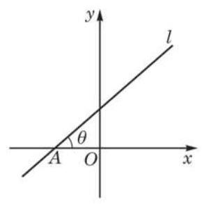
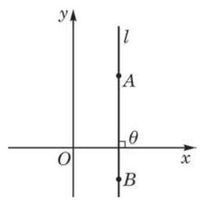
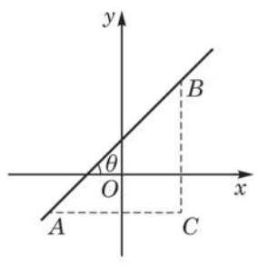
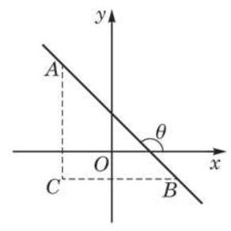
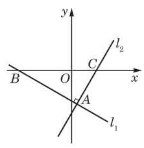
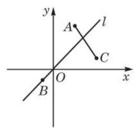

例题 1
例 1 已知直线 经过点 、 ，求它的斜率与倾斜角.
学生阅读版 / 沪教版高中数学
选择性必修第一册
第1章平面直角坐标系中的直线 · 保留教材主线与原题
教材与正式教参整合
在本册教材的这一章和下一章中, 我们将学习解析几何的初步知识与方法. 解析几何的研究思路是通过引进坐标系, 建立“点”与“数” 之间的一一对应, 从而用代数的观点与方法解决几何问题.
几何中, 与直线相关的问题主要包括: 点与直线、直线与直线之间的位置关系, 以及由直线组成的平面图形的性质与度量. 虽然其中的许多问题我们并不陌生, 用以往学过的平面几何的方法也能解决, 但本章所采取的是一种新的思路和方法, 它具有一般性和普适性. 通过学习, 可以帮助我们理解解析几何的一些基本特点.
设平面直角坐标系中有一条直线 ,我们如何确定该直线在坐标系中的位置并把它描述出来呢?

图 1-1-1
如果知道了直线 的倾斜角以及它经过的一个确定的点,那么就准确地给出了直线 在坐标系中的位置. 由于倾斜角难以直接用坐标表示出来, 而倾斜角的三角函数与坐标的关系更为密切. 为此,我们引进一个新的概念: 当直线 的倾斜角 时, 定义 为直线 的斜率 (slope),常用字母 表示,即 ; 当 ,即 与 轴垂直时,我们说直线 的斜率不存在.
我们来看如何用坐标表示一条直线的斜率.
设直线 经过不同的两点 . 当 时,直线 与 轴垂直 (图 1-1-2),此时,直线 的倾斜角 , 斜率不存在.

图 1-1-2

图 1-1-3

图 1-1-4
当 时,不妨设 ,有以下 3 种情况:
(1)若 ，则 的倾斜角 为锐角. 如图 1-1-3，作直角三角形 ,可得 .
(2)若 ，则直线 与 轴平行或重合，所以 的倾斜角 ,斜率也等于 0,这就是 (1) 结果中令 所得的值.
(3)若 ，则直线 的倾斜角 为钝角. 如图 1-1-4， 同样作直角三角形 ,则 . 在直角三角形 中,因为 ,所以 ,由此得 ,即 ,这与(1)中的结果相同.
例 1 已知直线 经过点 、 ，求它的斜率与倾斜角.
例 2 求一次函数 所表示直线的斜率.
例 3 已知三点 共线,求点 的坐标 与 所满足的关系式.
一次函数 的一次项系数 就是其对应直线的斜率.
(1) 、 ；
(2) 、 .

(第 1 题)
(1) 、 ；
(2) 、 ，其中实数 是常数.
(1) ；
(2) .

(第 5 题)